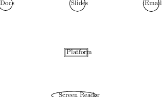

First, we briefly outline the architecture of adaptive technologies such as screen readers found on traditional operating systems. Here are the design requirements and constraints under which these were designed:
Microsoft Windows accessibility APIs include Microsoft Active Accessibility (MSAA), which was the original accessibility API for Windows; IAccessible2, an extension to MSAA developed by the Linux Foundation; and UI Automation, a newer API from Microsoft. All of these Windows APIs are Component Object Model (COM) interfaces, which are supported in almost every major programming language. Mac OS X and iOS support the NSAccessibility protocol, which is available to any application built using the Objective-C Cocoa APIs, and a bridge between NSAccessibility and Java’s accessibility API is built-in. Most Linux distributions support the GNOME Accessibility Toolkit (ATK), which was developed jointly with the IAccessible2 API for Windows and shares a compatible semantic programming model. Adaptive technologies such as screen readers that leverage these APIs to provide accessibility may be provided by the operating system or by third parties.
In this environment, an accessible application is one that implements the platform-specific accessibility API within its user interface. Because native operating system widgets and many other user interface toolkits already implement the accessibility APIs, applications built exclusively using these widgets may be accessible without any extra work on the part of the application developer. However, such an application may still be more difficult for an adaptive technology user to work with if the conceptual design of the application made assumptions, e.g., that the user can see the spatial layout of controls. Thus, the application publishes information that is of interest to adaptive technology, e.g., the label of the currently focused widget. Screen Readers subscribe to this information via the platform accessibility API 1. When working with an accessible application, the screen reader receives notifications via the accessibility API and subsequently provides appropriate alternative feedback, e.g., by speaking the label of the widget that is focused. Additionally, adaptive technologies like screen readers can query application state and in certain cases even drive the application, e.g., by setting focus to a given user interface control.
 PublishPublishPublishSubscribe